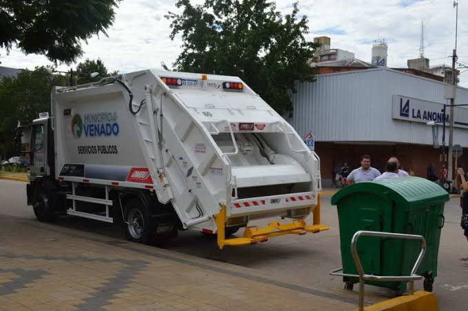
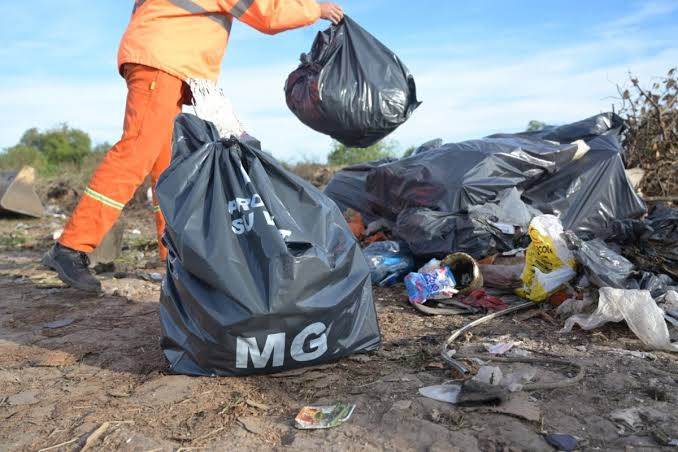
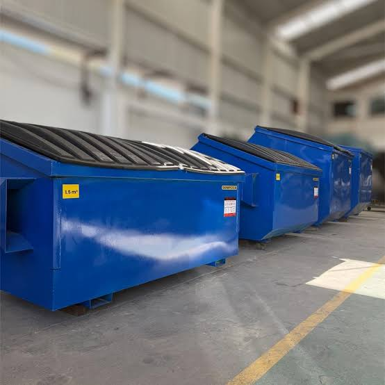
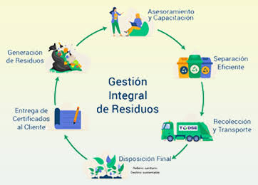

Recolección de residuos
Retiro de residuos generados por actividades comerciales e industriales, de acuerdo con sus características y condiciones de gestión.

Brindamos soluciones integrales para la recolección y gestión de residuos generados por empresas, fábricas y establecimientos industriales.

Retiro de residuos generados por actividades comerciales e industriales, de acuerdo con sus características y condiciones de gestión.

Provisión de contenedores para facilitar la organización, el almacenamiento temporal y la recolección de los residuos.

Traslado de los residuos desde las instalaciones de los clientes, según el tipo de material y las condiciones correspondientes.

Coordinación de la gestión y el destino de los residuos conforme a sus características y a los procedimientos y requisitos aplicables.
Cada residuo requiere una evaluación según su origen, composición y características. Conocé las principales categorías que podemos evaluar para brindar una solución.
Materiales descartados durante procesos de fabricación y actividades productivas.
Materiales reciclables generados en empresas, depósitos y establecimientos comerciales.
Restos metálicos y materiales provenientes de actividades industriales y productivas.
Residuos y materiales descartados durante obras, reformas y tareas de demolición.
Corrientes líquidas residuales cuya gestión requiere evaluar previamente su composición.
Materiales que requieren procedimientos específicos de identificación, transporte y gestión según la normativa aplicable.
Residuos provenientes de actividades sanitarias y de laboratorio que requieren gestión especializada.
Otras categorías que pueden analizarse individualmente según su procedencia y composición.
La aceptación de cada tipo de residuo está sujeta a una evaluación previa y a las autorizaciones y condiciones de gestión que correspondan.